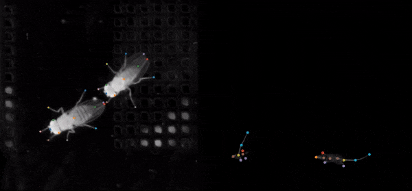

Social LEAP Estimates Animal Poses (SLEAP)¶



SLEAP is an open-source deep learning framework for multi-animal pose tracking (Pereira et al., Nature Methods, 2022). It provides an end-to-end workflow from labeling to trained models, with a purpose-built GUI for active learning and proofreading.
SLEAP App is that GUI, rebuilt as a web app. It runs entirely in your browser — no server, no Python, no install — or as a Desktop app when you want native file dialogs, local GPU training, and offline use.
Using a different version of SLEAP?
These docs cover SLEAP App, the web-based GUI. For the Qt/Python GUI:
- SLEAP v1.5–1.6 — docs.sleap.ai
- SLEAP v1.4.1 or earlier — legacy.sleap.ai
🚀 Get some SLEAP¶
Go to app.sleap.ai and drag a .slp file onto
the window. Nothing to install — that is the whole setup.
Native file dialogs, local GPU training, in-app updates, and offline use. One command installs it:
macOS / Linux
Windows
Prefer a specific release channel? See Installation.
Try the built-in tutorial
Click Start Tutorial in the menu bar and the app walks you through the whole loop in place — creating a project, building a skeleton, training, correcting predictions, and re-training — advancing only once you have actually done each step. Works in the browser too.
For a written walkthrough, follow the Quick Start — open a project, move through frames, and place your first instance in a few minutes.
📚 Explore the docs¶
-
Labeling
Place instances, build skeletons, correct predictions.
-
Keyboard Shortcuts
Every binding, plus canvas pan and zoom gestures.
-
Training
Run sleap-nn training with live loss curves.
-
Inference
Predict locally, or on a remote GPU worker.
-
Analysis
Instance size distributions and geometric label quality checks.
-
Import & Export
SLP, NWB, COCO, DeepLabCut, and analysis files.
🧩 How it fits with the rest of SLEAP¶
| Package | What it does | Docs |
|---|---|---|
| sleap-app | Labeling GUI, training/inference launcher (this site) | docs.app.sleap.ai |
| sleap-nn | PyTorch training and inference backend | nn.sleap.ai |
| sleap-io | Python data model and file I/O | io.sleap.ai |
| sleap-io.js | The TypeScript port this app reads and writes SLP with | iojs.sleap.ai |
| sleap | The original Qt/Python GUI this app replaces | docs.sleap.ai |
Projects are plain .slp files, so you can move between the app, the legacy GUI,
and the Python API freely.
Get help¶
-
FAQ
Common questions answered. View FAQ
-
Troubleshooting
Video won't play? Update stuck? Start here
-
Report an issue
Found a bug? Create an issue
References¶
SLEAP is the successor to the single-animal pose estimation software LEAP (Pereira et al., Nature Methods, 2019). If you use SLEAP in your research, please cite:
T.D. Pereira, N. Tabris, A. Matsliah, D. M. Turner, J. Li, S. Ravindranath, E. S. Papadoyannis, E. Normand, D. S. Deutsch, Z. Y. Wang, G. C. McKenzie-Smith, C. C. Mitelut, M. D. Castro, J. D'Uva, M. Kislin, D. H. Sanes, S. D. Kocher, S. S-H, A. L. Falkner, J. W. Shaevitz, and M. Murthy. SLEAP: A deep learning system for multi-animal pose tracking. Nature Methods, 19(4), 2022.
BibTeX
@ARTICLE{Pereira2022sleap,
title={SLEAP: A deep learning system for multi-animal pose tracking},
author={Pereira, Talmo D and Tabris, Nathaniel and Matsliah, Arie and
Turner, David M and Li, Junyu and Ravindranath, Shruthi and
Papadoyannis, Eleni S and Normand, Edna and Deutsch, David S and
Wang, Z. Yan and McKenzie-Smith, Grace C and Mitelut, Catalin C and
Castro, Marielisa Diez and D'Uva, John and Kislin, Mikhail and
Sanes, Dan H and Kocher, Sarah D and Samuel S-H and
Falkner, Annegret L and Shaevitz, Joshua W and Murthy, Mala},
journal={Nature Methods},
volume={19},
number={4},
year={2022},
publisher={Nature Publishing Group}
}
Contributors¶
SLEAP was created in the Murthy and Shaevitz labs at the Princeton Neuroscience Institute at Princeton University.
SLEAP is currently being developed and maintained in the Talmo Lab at the Salk Institute for Biological Studies, in collaboration with the Murthy and Shaevitz labs at Princeton University.
See the contributors graph for everyone who has worked on SLEAP App.
Funding
This work was made possible through our funding sources, including:
- NIH BRAIN Initiative R01 NS104899
- Princeton Innovation Accelerator Fund
License¶
SLEAP App is released under a BSD 3-Clause License.